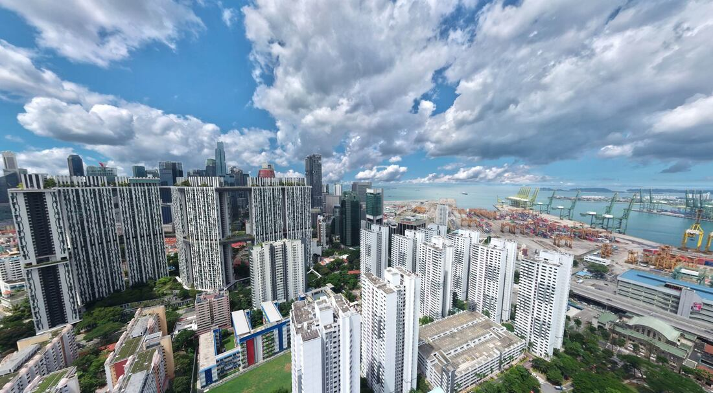
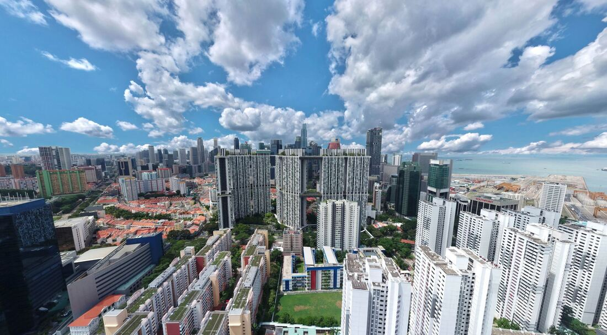
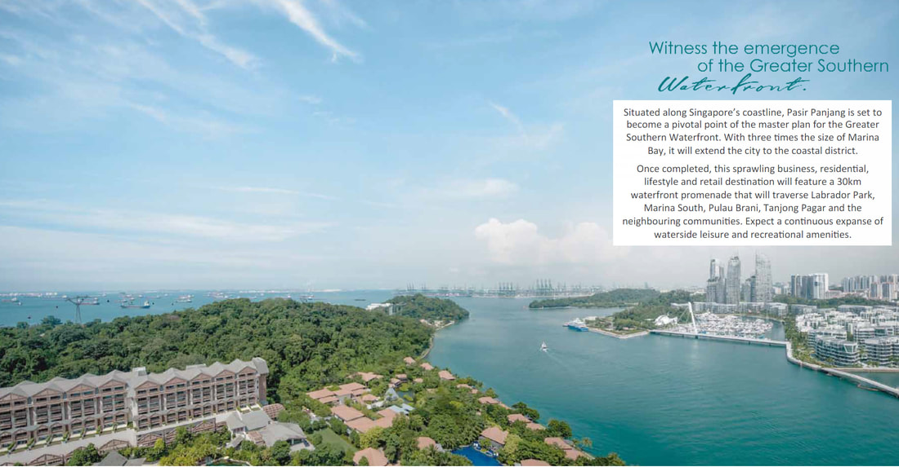
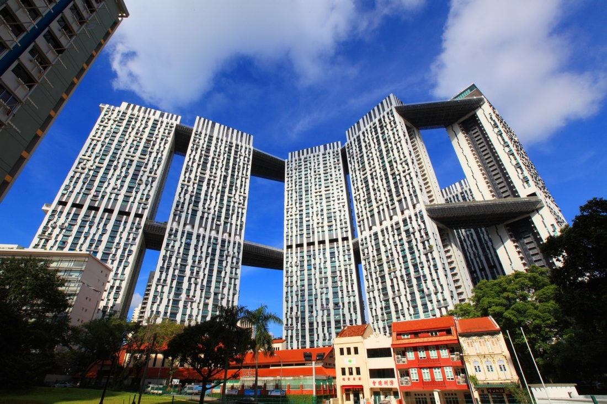
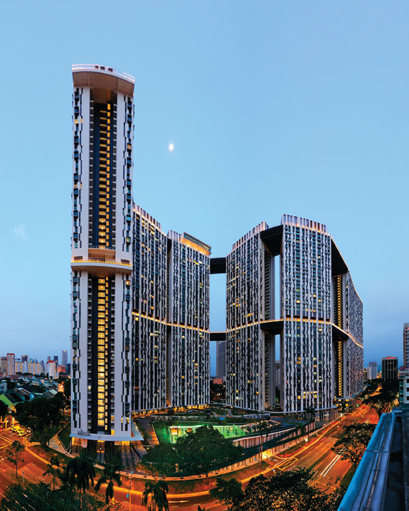
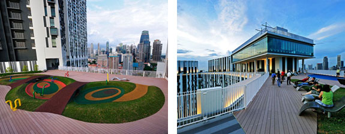

The Pinnacle @ Duxton (D02) HDB Resale in Tanjong Pagar
The Pinnacle @ Duxton is an award-winning 50-storey HDB residential development located in Singapore's city center within the Tanjong Pagar CBD, featuring innovative architectural design with connected towers and distinctive sky gardens.
Overview

The Pinnacle @ Duxton stands as a remarkable public housing development built through an international design competition that attracted over 200 entries. The project comprises seven interconnected towers on a 2.5-hectare site, accommodating 1,848 apartment units. It features two sky gardens spanning 500 metres each on the 26th and 50th floors, establishing what the development claims as the world's two longest sky gardens.
The design was created by ARC Studio Architecture + Urbanism in collaboration with RSP Architects Planners and Engineers. The development reflects sustainable urbanism principles through its high-density, walkable community design.

Architectural Excellence
The development showcases innovative design with walls constructed from lightweight concrete, allowing residents to reconfigure interior spaces. The distinctive connected towers create a sculptural skyline featuring twelve conceptualized sky gardens with themed names including Sky Gym, Hillock, Crater, and Meadows.

These elevated spaces function as community interaction areas, incorporating children's playgrounds, outdoor fitness facilities, and landscape furniture. The sky bridges also serve emergency refuge functions while reducing mechanical service requirements across the development.
Sky Gardens and Public Access

The 50th-floor sky bridge is accessible to the public for a fee of approximately S$6, with daily visitor limits of 200 people. Residents enjoy complimentary access to both the 26th and 50th-storey gardens using magnetic access cards. These spaces provide panoramic views of the cityscape and serve as extensions of residential living environments.
Award Recognition

The development received the 2010 Best Tall Building (Asia and Australasia) award from the Council on Tall Buildings and Urban Habitat, and the 2011 Urban Land Institute's Global Awards for Excellence. It was additionally honored with the President's Design Award Singapore in 2014.
The project has been featured in international documentaries, including Discovery Channel's coverage of skyscraper development.

Location and Amenities
Situated in the heart of Tanjong Pagar's central business district, the development integrates with historic surroundings while providing modern urban living. Residents benefit from proximity to two train stations connecting to the island-wide mass rapid transit system, plus bus stops at the development's entrance.
Internal amenities include shops, food courts, education centers, childcare facilities, and two community centers, creating a comprehensive living ecosystem.
Community-Oriented Design
The development embodies a vertical kampung (village) concept, fostering community interaction through shared elevated spaces. The integration of green areas totaling nearly 1 hectare provides environmental benefits to the urban setting.
Historic Significance
The site occupies Duxton Plain, where the first two blocks of public housing in Tanjong Pagar originally stood among Singapore's oldest public housing estates. The redevelopment represents continuity of public housing provision in this historically significant location.